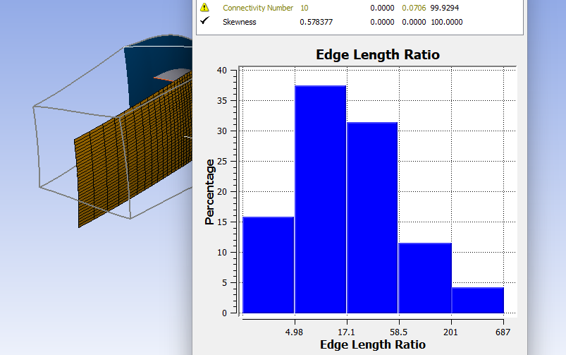

Note
Go to the end to download the full example code.
Mesh statistics report#
To generate a mesh statistics report, you use the mesh_statistics module
and CCL (CFX command language) queries. This example shows how to generate
a mesh statistics report for the blade model in the Basic mesh generation
example.
Jinja is used to generate
this report in HTML format, starting from the report_template.html file.
Report for rotor37#
{kind=link}

Perform required imports#
Note: This example requires the jinja2 module to be installed before python is executed:
$ python -m pip install Jinja2
Perform the required imports.
from collections import OrderedDict
from datetime import date
import os.path as ospath
from ansys.turbogrid.api.CCL.ccl_object_db import CCLObjectDB
from jinja2 import Environment, FileSystemLoader
from ansys.turbogrid.core.launcher.launcher import get_turbogrid_exe_path, launch_turbogrid
from ansys.turbogrid.core.mesh_statistics import mesh_statistics
Set up a TurboGrid session#
Set up a TurboGrid session with a basic case and mesh, similar to the Basic mesh generation example.
turbogrid = launch_turbogrid()
exec_path = get_turbogrid_exe_path()
turbogrid_install_location = "/".join(exec_path.parts[:-2])
turbogrid_install_location = turbogrid_install_location.replace("\\", "")
examples_path_str = turbogrid_install_location + "/examples"
if not ospath.isdir(examples_path_str):
print("examples folder not found in the TurboGrid installation")
exit()
turbogrid.read_inf(examples_path_str + "/rotor37/BladeGen.inf")
turbogrid.unsuspend(object="/TOPOLOGY SET")
Determine domains#
Determine which domains are available by querying the CCL (CFX command language).
ALL_DOMAINS = "ALL"
ccl_db = CCLObjectDB(turbogrid)
domain_list = [obj.get_name() for obj in ccl_db.get_objects_by_type("DOMAIN")]
domain_list.append(ALL_DOMAINS)
Set up case details#
Set up the information to show under “Case Details” in the report.
case_info = OrderedDict()
case_info["Case Name"] = "rotor37"
case_info["Number of Bladesets"] = ccl_db.get_object_by_path("/GEOMETRY/MACHINE DATA").get_value(
"Bladeset Count"
)
case_info["Report Date"] = date.today()
Create MeshStatistics object#
Create the MeshStatistics object for obtaining the mesh statistics.
ms = mesh_statistics.MeshStatistics(turbogrid)
Calculate and store mesh statistics#
Calculate and store the basic mesh statistics for each domain separately and for all domains.
domain_count = dict()
for domain in domain_list:
ms.update_mesh_statistics(domain)
domain_count[ms.get_domain_label(domain)] = ms.get_mesh_statistics().copy()
Check loaded mesh statistics#
Check the currently loaded mesh statistics to ensure that they are for all domains.
ms.update_mesh_statistics(ALL_DOMAINS)
all_dom_stats = ms.get_mesh_statistics()
Get mesh statistics table information#
Get the mesh statistics table information in a form that can easily be used to generate the table in the report.
stat_table_rows = ms.get_table_rows()
Generate histograms#
Generate histograms for all required mesh quality measures.
hist_var_list = ["Minimum Face Angle", "Skewness"]
hist_dict = dict()
for var in hist_var_list:
file_name = "tg_hist_" + var + ".png"
var_units = all_dom_stats[var]["Units"]
if var_units == "rad":
var_units = "deg"
ms.create_histogram(
variable=var, use_percentages=True, bin_units=var_units, image_file=file_name, show=False
)
hist_dict[var] = file_name
Quit session#
Quit the TurboGrid session as all of the relevant information has now been assembled.
turbogrid.quit()
Set up Jinja library#
Set up the Jinja library with the relevant template and data.
You must have a local (downloaded) copy of the report template
report_template.html.
This is located in the examples directory of the pyturbogrid source code. If
you do not have the pyturbogrid source code available, the template can be
downloaded from report_template.html.
The python command below assumes that the example is being executed by running
the mesh_statistics_report.py script non-interactively and that the
report_template.html file is located in the same directory as the script.
Otherwise, ospath.dirname(__file__) must be replaced with the name of the
folder that contains the report_template.html file.
environment = Environment(loader=FileSystemLoader(ospath.dirname(__file__)))
html_template = environment.get_template("report_template.html")
html_context = {
"case_info": case_info,
"domain_count": domain_count,
"stat_table_rows": stat_table_rows,
"hist_dict": hist_dict,
}
Generate report#
Generate the HTML report.
filename = f"tg_report.html"
content = html_template.render(html_context)
with open(filename, mode="w", encoding="utf-8") as message:
message.write(content)
print(f"... wrote {filename}")